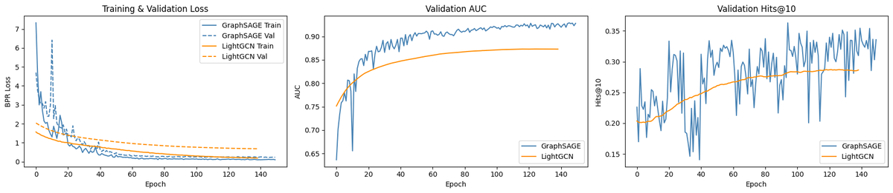
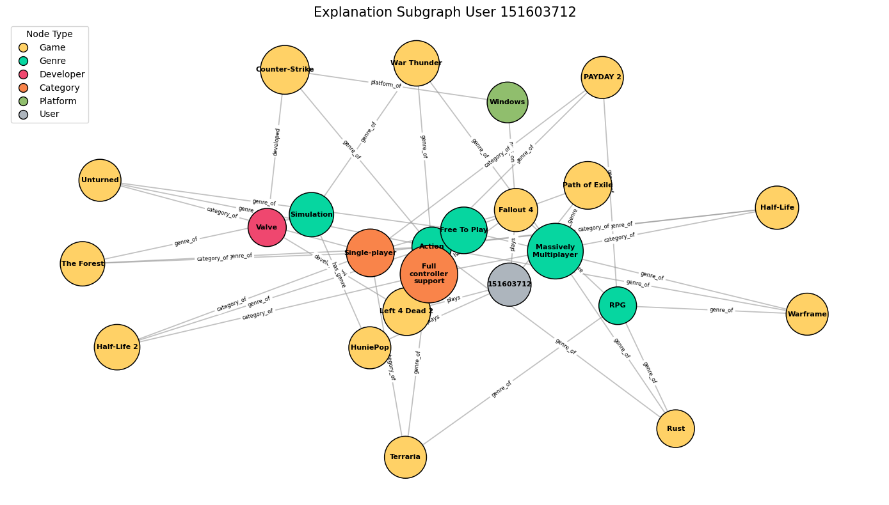

Constructed a heterogeneous knowledge graph recommender from Steam game meta data and interaction data. Trained GraphSAGE and LightGCN in an ensemble on the knowledge graph to predict which games a user is likely to play next. Generated human-readable justifications for the recommendations with rule-based relational path extraction to find direct paths to the recommendations and GNNExplainer subgraph attributions to rank weights of the most important relations/edges.
GraphSAGE builds a user's embedding by aggregating neighbors (games they played), and a game's embedding by aggregating its neighbors (genres, developer, and publisher) while folding in its attributes (price, review volume/ratio, estimated owners, release year). This modellearns per-relation scales, letting the model decide on relationship weights.
LightGCN is a far quicker and stabler counterpart to GraphSAGE. It performs 3 rounds of graph propagation with a learnable scalar per edge type, and the final embedding averaged across all 3 layers. This model isolates how much signal comes from graph connectivity alone versus content features. In the ensemble, it serves as a strong collaborative-filtering baseline while graphSAGE provides a more nuanced relational understanding.
We joined the Steam-200k play interactions (we used log1p-scaled hours played on a game to measure edge weight) with FronkonGames Steam metadata by exact title match. We used this resulting dataset to create a 7-node-type heterogeneous graph (User, Game, Genre, Developer, Publisher, Category, Platform), with customized relation/edge types, and each game node carrying 5 normalized numeric features from the metadata dataset (price, review volume, pos/neg review ratio, estimated owners, release year).
This model learns a soft importance score for every edge in a compact subgraph around the user (their played games plus the games being explained, out to genre/developer), surfacing which edges most shaped the prediction.
We used rule-based relational paths to search the full knowledge graph for readable user → game paths. We then rank them by how many GNNExplainer-flagged nodes they pass through, and deduplicates by bridge entity so the 3 surfaced paths aren't repeated.

| GraphSAGE | LightGCN | Ensemble | |
|---|---|---|---|
| ROC-AUC | 0.95 | 0.88 | 0.94 |
| Avg Precision | 0.94 | 0.88 | 0.94 |
| Hits@10 | 0.35 | 0.29 | 0.37 |

- Left 4 Dead 2→Action→Unturned
- Path of Exile→Free To Play→Unturned
- Fallout 4→Single-player→Unturned
- Fallout 4→RPG→Terraria
- Left 4 Dead 2→Action→Terraria
- Fallout 4→Single-player→Terraria
- Fallout 4→RPG→Rust
- Left 4 Dead 2→Action→Rust
- Path of Exile→Massively Multiplayer→Rust
- Fallout 4→RPG→PAYDAY 2
- Left 4 Dead 2→Action→PAYDAY 2
- Fallout 4→Single-player→PAYDAY 2
- Left 4 Dead 2→Action→The Forest
- HuniePop→Simulation→The Forest
- Fallout 4→Single-player→The Forest
- Left 4 Dead 2→Action→Counter-Strike
- Fallout 4→Windows→Counter-Strike
- Left 4 Dead 2→Valve→Counter-Strike
- Fallout 4→RPG→Warframe
- Left 4 Dead 2→Action→Warframe
- Path of Exile→Free To Play→Warframe
- Left 4 Dead 2→Action→Half-Life 2
- Fallout 4→Single-player→Half-Life 2
- Fallout 4→Full controller support→Half-Life 2
- Left 4 Dead 2→Action→War Thunder
- HuniePop→Simulation→War Thunder
- Path of Exile→Massively Multiplayer→War Thunder
- Left 4 Dead 2→Action→Half-Life
- Fallout 4→Single-player→Half-Life
- Fallout 4→Full controller support→Half-Life